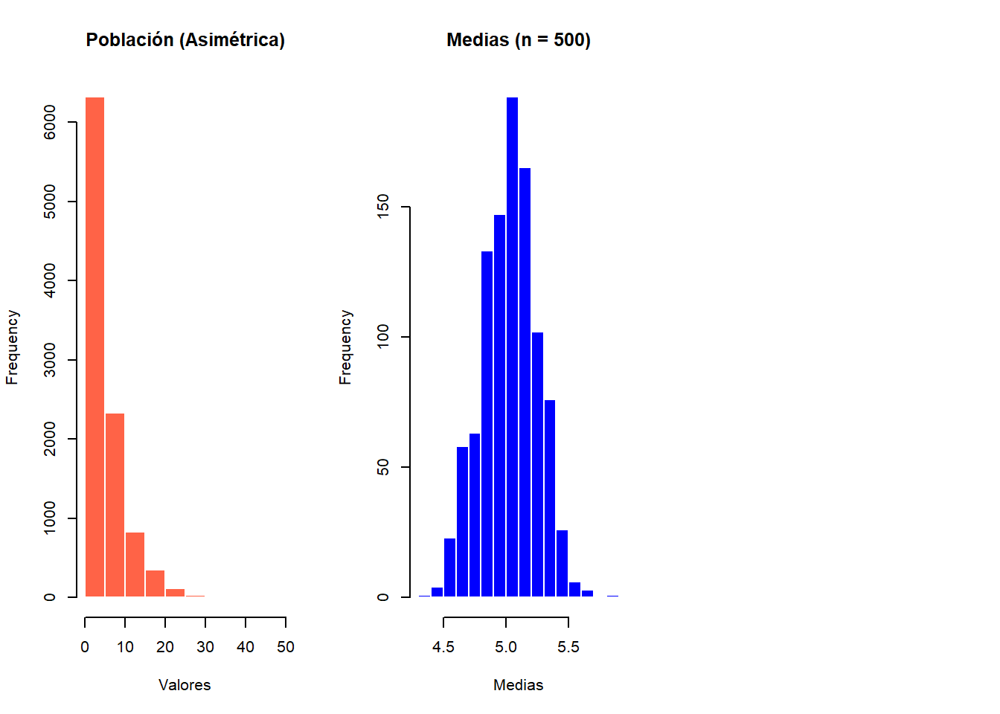

Esta guía está diseñada para acompañar el estudio para la prueba 1 del curso Estadística Correlacional.
1 Fundamentos de la inferencia
Inferencia: busca responder en qué medida se puede relacionar resultados que se encuentran en una muestra (subconjunto) con lo que ocurre en la población (general). Es decir, ¿lo que se está observando es un reflejo de lo que ocurre a nivel poblacional por lo que se puede extrapolar o solo se debe al azar?
Ley de los grandes números: al aumentar el tamaño de una muestra, el promedio de esa muestra se acercará cada vez más al promedio poblacional.
Curva de distribución normal: es una curva simétrica y de forma acampanada que representa la distribución de los casos de la población en torno al promedio con una varianza conocida. Se pueden establecer áreas bajo la curva en base a desviaciones estándar del promedio.
Estandarización: expresión de un valor en términos de desviaciones estándar basados en la distribución normal, esto permite comparar valores de distribuciones distintas. Para obtener el puntaje Z, al valor que queremos estandarizar se le resta la media y se divide por la desviación estándar.
Teorema Central del Límite: la distribución de las medias muestrales se aproxima a una distribución normal a medida que aumenta el tamaño de la muestra.
Code
set.seed(123)# Población original marcadamente asimétricapoblacion_sesgada <-rexp(10000, rate =0.2) # Simulamos 1000 medias de muestrasmedias <-replicate(1000, mean(sample(poblacion_sesgada, 500)))par(mfrow =c(1, 3))hist(poblacion_sesgada, main ="Población (Asimétrica)", xlab ="Valores", col ="tomato", border ="white")hist(medias, main ="Medias (n = 500)", xlab ="Medias", col ="blue", border ="white")

Figure 1: Distribución de medias muestrales para distintos tamaños de n.
2 Con qué estadísticos lo estimamos?
Error estándar: estadístico fundamental para la inferencia estadística (intervalo de confianza y test de hipótesis). Indica cuánto varían las medias entre distintas muestras, pero con la gran ventaja de que podemos estimarlo utilizando los datos de una sola muestra (gracias al Teorema del Límite Central). Se calcula: \[\sigma_{\bar{X}} = SE(\text{error estándar}) = \frac{s}{\sqrt{N}}\]
Nivel de confianza: equivale a (1-probabilidad de error). Por convención, se considera estadísticamente significativa a una probabilidad de error menor al 5%, que es un nivel de confianza del 95%. Es decir, si extraemos múltiples muestras, el 95% de las veces nuestro intervalo contendría el promedio o que podríamos rechazar \(H_0\).
Intervalo de confianza: rango de un estadístico en la población con una muestra aleatoria (recordar que con 95% el puntaje Z es 1.96). En el caso del promedio se calcula: \[ \bar{x} \pm Z * \frac{\sigma}{\sqrt{N}} \]
Diferencia de medias: procedimiento estadístico que permite contrastar empíricamente si los promedios de dos grupos independientes difieren significativamente en la población o se debe puramente al azar muestral.
valor t: indica cuántos errores estándar separan la diferencia observada de cero.
valor p o probabilidad de error: es la probabilidad de que nos estemos equivocando, es decir, de rechazar la hipótesis nula cuando esta es verdadera (por convención, el valor crítico es 0.05).
Error Tipo I o alfa: “falso positivo”, encontrar algo en la muestra que no existe en la población.
Error Tipo II o beta: “falso negativo”, no encontrar algo en la muestra que si existe en la población.
Grados de libertad: resumen la cantidad de información empírica disponible para estimar la variabilidad poblacional. Son cruciales porque determinan la forma de la distribución t y fijan el umbral del valor crítico. A medida que aumenta el tamaño de la muestra, la distribución se parece más a la curva normal.
3 ¿Cuál es el procedimiento para estimar inferencia?
Paso
Nombre
Definición
1
Formulación de hipótesis
Establecer la hipótesis nula (\(H_0\), que asume la ausencia de diferencia) y la alternativa (\(H_1\), lo que se busca probar). Las hipótesis se extraen a partir de lo que queremos responder.
2
Estadístico de prueba
Calcular el valor empírico (ej. Z o T) utilizando los datos de la muestra y el error estándar.
3
Nivel de significancia (\(\alpha\))
Definir el umbral máximo de probabilidad aceptable para cometer un Error Tipo I (rechazar \(H_0\) siendo verdadera). Por convención, se fija \(\alpha = 0.05\), aceptando un 5% de riesgo de equivocarnos al rechazar \(H_0\).
4
Contraste valor empírico/crítico
Comparar el estadístico empírico con el teórico (crítico). Se ocupan tres criterios para tomar la decisión si rechazar o no \(H_0\): \(valor t\), \(valor p\) e intervalos de confianza.
5
Decisión y conclusión
Rechazar o no \(H_0\), e interpretar el resultado sustantivamente en el contexto del problema sociológico de investigación.
4 Ojo con esto!!!
¿direccional o no direccional? Una pregunta de investigación puede buscar cualquier diferencia entre dos grupos (no direccional) o anticipar que la diferencia ocurrirá en una dirección específica (direccional). Es importante darse cuenta en la formulación del problema, si se dice que la media de B es mayor o menor a la de A, es direccional. Si solo se menciona que son diferentes, la prueba es no direccional.
¿Diferentes umbrales de significancia? Por convención el nivel de confianza es del 95% (\(p\)=0.05). Sin embargo, en la investigación también se ocupan valores de 99% y 99.9%.
¿Decisión final? La conclusión tras la prueba de hipótesis debe ser sustantiva y relevante sociológicamente. Por lo tanto, es fundamental escribir los resultados numéricos entre paréntesis para sostener el argumento y RECORDAR SIEMPRE que se está rechazando la hipótesis nula (\(H_0\)), lo que otorga evidencia empírica a favor de la hipótesis alternativa (\(H_1\)). No estamos afirmando que algo es una verdad absoluta ni estableciendo causalidad, sino descartando que la diferencia observada se deba puramente al azar.
5 Preguntas conceptuales/teóricas
¿Qué significa la inferencia estadística?
¿Por qué en inferencia ocupamos el error estándar en vez de la distribución estándar?
Explica con tus palabras qué es un error tipo I y un error tipo II.
Explica con tus palabras qué es un intervalo de confianza.
Menciona el nivel de significancia que ocupa por convención en la estadística ¿a qué \(valor p\) equivale?
Qué quiere decir que se rechaza \(H_0\) con una probabilidad de error de \(p\) < 0.05.
Si decimos que el \(valor p crítico\) equivale a 0.001, ¿de qué nivel de confianza estamos hablando?
Escribe una pregunta de investigación que se pueda responder con una prueba de diferencia de medias direccional y otra, no direccinal.
6 Ejercicios de aplicación
En el curso de Sociología del Género, los ayudantes quisieron investigar si existía una diferencia significativa de género en las notas de los estudiantes de tercer año. Los ayudantes le pidieron ayuda a usted debido a que no recordaban los contenidos de estadística. A partir de la siguiente información, realice el procedimiento de 5 pasos de la inferencia calculando valor t, valor p (95% de confianza), intervalo de confianza y debe terminar con una conclusión clara y sustantiva:
Métrica
Valor
Métrica
Valor
Tamaño muestral
100
SE de la diferencia de medias
0.2
Nota promedio mujeres
6.0
Nota promedio hombres
5.5
Valor t crítico
1.96
Estadístico de prueba
\(t = \frac{\bar{X}_1 - \bar{X}_2}{SE}\)
En una asamblea de facultad se comentó que a los académicos se les pagaba signficativamente más que al resto de los funcionarios administrativos de la facultad. Decidiste buscar la información de transparencia de los sueldos de ambos grupos y realizar una prueba de diferencia de medias con los siguientes datos: